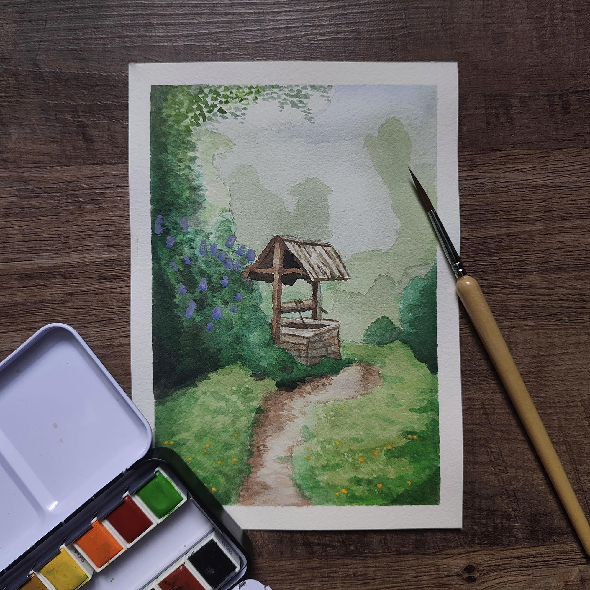
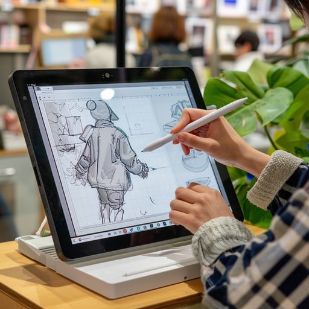

Watercolor is a fun medium to use and have fun with. Watercolor is unique in its ability to almost sort of create art by itself. The application of watercolor on paper can leave unique designs. Watercolor has its downsides, which some say it is how long it takes to dry and its difficulty to handle. Watercolor also does not require many tools in order to use it. You will need a watercolor palette, which will most likely come with a brush. Water to activate the paints. A towel to dry your brush on, and of course, your canvas or paper!

Supplies a Beginner Needs
Water color palette + Brush
Cup of Water.
Towel or something to whip paint on.
Canvas or paper.
Digital Art
Digital Art may seem like a new-age thing, but it has been around for a long time. Digital art is more than an artist drawing in different applications. It can be achieved through CGI in movies, 3D modeling, but never with AI. Recently, people have become confused, considering AI-generated images as art, but they will never be. Art is about conveying emotion and messages from a soul, which AI does not have. Digital art is amazing in its capabilities and many different forms. In a way, digital art can be for anyone. It does not necessarily mean drawing on a digital canvas, but creating something unique and creative. Digital art can be on the expensive side. A professional setup could cost thousands of dollars. A simple setup might be an iPad, which is how I started!

Additonal Information On Water Color and Digital Art
These are links to helpful websites that provide information on acrylic paint and alcohol markers.